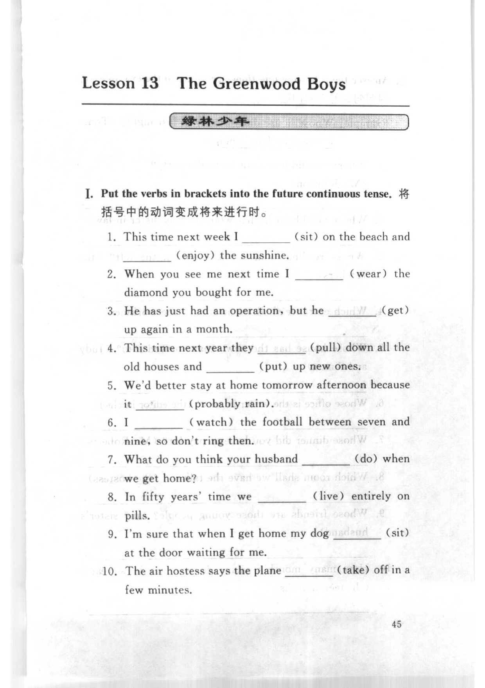
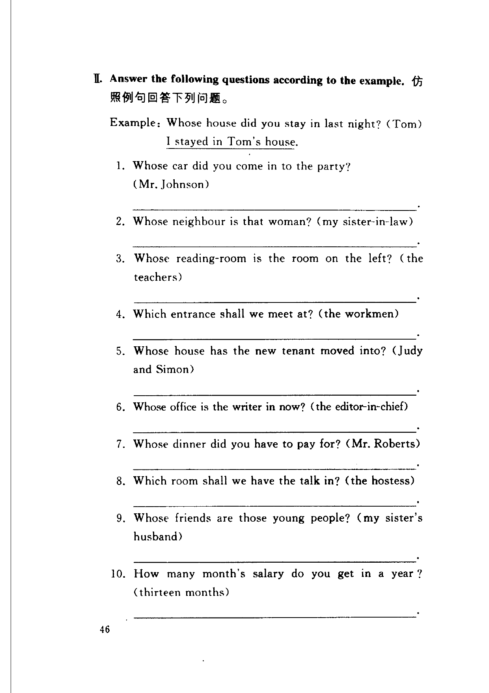
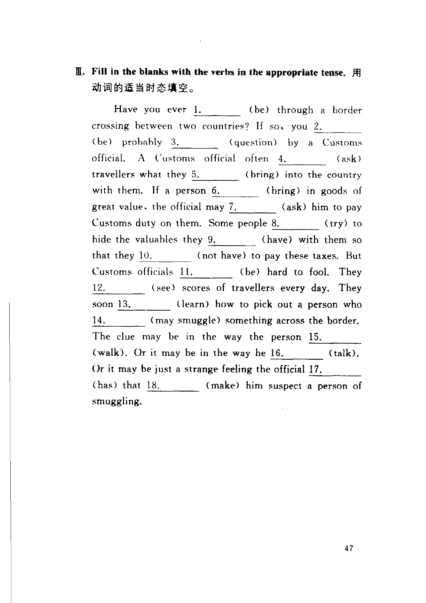

Grammar exercises · 语法练习
I. Put the verbs in brackets into the future continuous tense.
将括号中的动词变成将来进行时。
-
I. Future continuous — This time next week I (sit) on the beach and (enjoy) the sunshine.
-
I. Future continuous — When you see me next time I (wear) the diamond you bought for me.
-
I. Future continuous — He has just had an operation, but he (get) up again in a month.
-
I. Future continuous — This time next year they (pull) down all the old houses and (put) up new ones.
-
I. Future continuous — We'd better stay at home tomorrow afternoon because it (probably rain).
-
I. Future continuous — I (watch) the football between seven and nine, so don't ring then.
-
I. Future continuous — What do you think your husband (do) when we get home?
-
I. Future continuous — In fifty years' time we (live) entirely on pills.
-
I. Future continuous — I'm sure that when I get home my dog (sit) at the door waiting for me.
-
I. Future continuous — The air hostess says the plane (take) off in a few minutes.
II. Answer the following questions according to the example.
仿照例句回答下列问题。
Example · 例句
Whose house did you stay in last night? (Tom)
I stayed in Tom's house.
-
II. Answer — Whose car did you come in to the party? (Mr. Johnson)
-
II. Answer — Whose neighbour is that woman? (my sister-in-law)
-
II. Answer — Whose reading-room is the room on the left? (the teachers)
-
II. Answer — Which entrance shall we meet at? (the workmen)
-
II. Answer — Whose house has the new tenant moved into? (Judy and Simon)
-
II. Answer — Whose office is the writer in now? (the editor-in-chief)
-
II. Answer — Whose dinner did you have to pay for? (Mr. Roberts)
-
II. Answer — Which room shall we have the talk in? (the hostess)
-
II. Answer — Whose friends are those young people? (my sister's husband)
-
II. Answer — How many month's salary do you get in a year? (thirteen months)
III. Fill in the blanks with the verbs in the appropriate tense.
用动词的适当时态填空。
-
III. Tenses — Have you ever 1. (be) through a border crossing between two countries? If so, you 2. (be) probably 3. (question) by a Customs official. A Customs official often 4. (ask) travellers what they 5. (bring) into the country with them. If a person 6. (bring) in goods of great value, the official may 7. (ask) him to pay Customs duty on them. Some people 8. (try) to hide the valuables they 9. (have) with them so that they 10. (not have) to pay these taxes. But Customs officials 11. (be) hard to fool. They 12. (see) scores of travellers every day. They soon 13. (learn) how to pick out a person who 14. (may smuggle) something across the border. The clue may be in the way the person 15. (walk). Or it may be in the way he 16. (talk). Or it may be just a strange feeling the official 17. (has) that 18. (make) him suspect a person of smuggling.
Original images · 原图对照
Expand a page to compare it with the transcription. Open the original in a new tab to zoom in.
展开原图核对文字，也可以在新标签页打开原图放大查看。
Book page 1 · Exercise I (future continuous, items 1–10)
Open original · 打开原图 ↗ Download original · 下载原图


Book page 2 · Exercise II (answer the questions, items 1–10)
Open original · 打开原图 ↗ Download original · 下载原图


Book page 3 · Exercise III (tenses, item 1)
Open original · 打开原图 ↗ Download original · 下载原图


Your notes and answers
Use this space for longer responses or exercises that do not have an individual answer box.